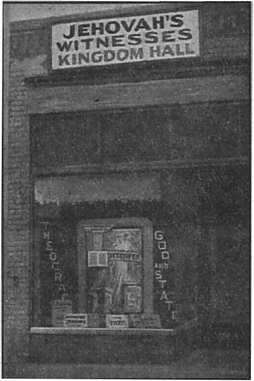
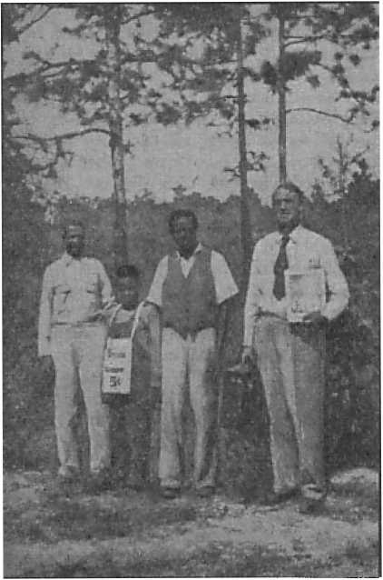
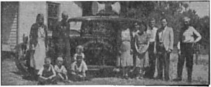

San Diego Officials Line Up Against New Earth’s Princes The amazing story of San Diego officials’ disgrace Petition of thousands of San Diego citizens ignored
To whom does Psalm 23 apply?
Five Cents a Copy Vol. XXIII No. 592 • $1.25 In Canada and Published Every
One Dollar a Year May 27, 1942•Foreign Countries Other Wednesday
Contents
San Diego Officials Line Up
Judge Rutherford’s Winter Workshop
First Location Denied by Commission
Petition Denied for Second Site
Concealed Grave versus Open Sewer
Princes Promised Earthly Resurrection
Judge Rutherford’s Final Witness
“Thy Word Is Truth”
The New Government
Before the Philippines Were Seized
A 13-Year-Old’s Witness in Britain
Under the Totalitarian Flag “Interest Will Go On Forever”?
Presenting “This Gospel of the Kingdom” 26
Religion in the Public Schools
British Comment
The Siege and Relief of Tobruk
Published every other Wednesday by WATCHTOWER BIBLE AND TRACT SOCIETY, INC.
117 Adams St., Brooklyn, N. Y., U. S. A.
Editor Clayton J. Woodworth
Business Manager Nathan H. Knorr
Five Cents a Copy
$1 a year in the United States ?1.25 to Canada and all other countries
NOTICE TO SUBSCRIBERS
Remittances: For your own safety, remit by postal or express money order. When coin or currency is lost in the ordinary mails, there is no redress. Remittances from countries other than those named below may be made to the Brooklyn office, but only by International postal money order.
Receipt of a new or renewal subscription will be acknowledged only when requested. Notice of Expiration is sent with the journal one month before subscription expires. Please renew promptly to avoid loss of copies. Send change of address direct to us rather than to the post office. Your request should reach us at least two weeks before the date of issue with which it is to take effect. Send your old as well as the new address. Copies will not be forwarded by the post office to your new address unless extra postage is provided by you.
Published also in Afrikaans, Bohemian, Danish, Dutch, Finnish, French, German, Greek, Hungarian, Japanese, Norwegian, Polish, Portuguese, Spanish, Swedish, Ukrainian; also special Australian edition in English.
OFFICES FOR OTHER COUNTRIES
England 34 Craven Terrace, London, W. 2
Canada 40 Irwin Avenue, Toronto 5,’ Ontario
Australia 7 Beresford Road, Strathfield, N.S.W. South Africa 623 Boston House, Cape Town.
Entered as second-class matter at Brooklyn, N. Y., under the Act of March 3, 1879.
“Divine Chastisement”
♦ The Scriptures say that the world is in its present jam because Satan has been cast out of heaven and is now confining all his activities to the earth, with the destruction of the human family as an objective. And then there is the “Most Reverend” (Almighty God is just plain “reverend”, and once only in the Scriptures) John T. McNicholas, archbishop of Cincinnati, who says that the present war is a “divine chastisement”, presumably because the people have not spent enough money on bingo games and other religious works. Select the explanation you prefer.
A Wishy-washy Statement of the Pope
♦ If it is true that the church does not want to mix in disputes about the opportunity, utility and earthly efficacy of diverse temporal forms which are purely political institutions or activities, we may assume it is none the less true that it neither can nor wishes to give up being the light and guide of consciences in all those questions of principle in which men or their program or their actions may run the risk of forgetting or denying the eternal fundamentals of divine law.— Vatican City dispatch of Associated Press, in New York World-Telegram, November 22, 1941.
Religious Feeling Among Russians
♦ In an article in the Italian Catholic magazine Civilta Cattolica the “Reverend Father” F. Pellegrino explains that there is now a strong religious feeling among the Russian people. Probably so; Hitler’s tanks may have had to do with it. Pellegrino says that “Russia might eventually rejoin the Christian nations”. Let him that knoweth make a list of those Christian nations. There is not one. Some of them, as Vatican City, are religious, but certainly none are Christian.
“And in His name shall the nations hope.”—Matthew 12:21, A.R.V.
Volume XXIII Brooklyn, N. Y., Wednesday, May 27, 1942 Number 592
San Diego Officials
Line Up Against New Earth’s Princes
BEFORE his death Judge Rutherford made the simple request that his remains be buried somewhere on the hundred-acre estate at San Diego, California, held in trust for the New Earth's Princes. The house built thereon he named “Beth-Sarim”; it was deeded to those princes. On March 14, more than two months after he passed to his reward on January 8, the San Diego County Planning Commission handed down the decision that nowhere upon this land could his bones repose.
This was their second denial of a permit for burial, claiming to act under a county ordinance which expressly provides for cemeteries in this area but requires that a conditional permit from the Planning Commission be first obtained. This the commission refused as to two different sites. The action of the Planning Commission was contrary to the county ordinance, allowing cemeteries in this district.
Just how a man’s bones, buried without monument or even conspicuous marker, in the center of 100 acres of land, a half mile from the closest outside house, could disturb anyone is left for the commission to explain. The V.F.W., who petitioned against the granting of the permit, prejudicially explained it this way: “Judge Rutherford, during his lifetime, taught intolerance,” and, "therefore, as a manifestation of our “tolerance”, we do not wish him buried.’
During the nine weeks from the day of Judge Rutherford’s death until the denial of the second petition by the Planning Commission, the Watchtower and its legal agents, who were charged both by the judge’s request and by statute to bury his body, made exhaustive efforts to discharge their responsibility, and were blocked at every turn by officials both of the county and of the state, including the state director of public health, the state attorney-general, and even the office of the governor. The record of this whole affair is so outrageous that it is brought to public attention as disclosing the depth of meanness resorted to by religionists to satisfy their vindictiveness even on lifeless bones. It also furnishes a perfect example of those ensnared by religion. They have foolishly thrown away all worthiness of life merely for the brief satisfaction of spite.
Several years ago, Judge Rutherford assigned to the Watchtower the right for the burial of his remains. In early 1940, and just before the Detroit convention in July, he was attacked by severe illness, and afterward recovered sufficiently to continue through that convention, and to make five surpassing speeches to the marvelous St. Louis convention of August, 1941. By November, 1941, the illness had gained ground, and he was compelled to have an operation, in Elkhart, Indiana. It was then that he expressed the desire to get back to California, and he was subsequently brought to Beth-Sarim by train and ambulance.
For some time it had been apparent to all, even the best medical experts, that he could not recover. The judge had yearned to see the ancient witnesses (mentioned in the 11th chapter of Hebrews) return to earth at Beth-Sarim, which place (held by the Watch Tower Bible & Tract Society for these men) by name means, in Hebrew, “House of the Princes/’ As he thought he might die before that event, he wanted his bones left on the property. These facts are brought out more fully in the statement to the County Planning Commission on January 24, hereinafter set forth.
In order to comply with the law, a cemetery corporation was formed of members of the Beth-Sarim family, and a plot of ground was deeded to this family corporation, about three hundred feet from the residence and so far down the canyon slope as to be invisible from every house on the heights. The corporation was known as Beth-Sarim’s Rest, and this small plot bore the same name. This was completed in December, and approximately three weeks later the judge passed on to his higher work. While it had been expected, to those near him and aware of his serious condition, his death was none the less a terrible shock to those who had worked with and loved him for many years.
One, suffering from this great loss, on the very day of the death, had the death certificate filled out, and, with the mortician, requested the burial permit. It was then that the county officials delivered their first wallop to an afflicted and bereaved family. No permit would be granted for burial on Beth-Sarim’s Rest, even though it was a legal corporation and the death certificate was in order, unless Beth-Sarim’s Rest were granted a conditional permit to operate a cemetery in this part of the county.
The district attorney advised that in 1940 an ordinance restricting this area was passed, but allowing cemeteries on conditional permit from the Board of Supervisors. Naturally this information disturbed a family already shaken by death; but due application was made to the Planning Commission, and, after forcing the family to leave the remains in the mortuary for two weeks, the Commission deigned to consider the matter and refused the permit.
Meanwhile the two weeks were an awful nightmare. Judge Rutherford was much hated by the religionists; and when his death was known, the press dug up every lie invented by the clergy for the past twenty years, and smeared their pages with lying malice. As a result a continuous stream of cars thronged the road and sidewalk which dead-ends just beyond the house, and great congestion resulted. The grave had been dug and the cemetery premises were entered by trespassers, and. so much damage done that the police and sheriff’s office had to be notified, still without abatement of this disturbing nuisance.
Children and their religious parents indulged in jeering epithets as they passed the house, in a manner hitherto unheard of toward a grief-stricken family. It was horrifying indeed to hear shouted to the household from the street: “How long are you going to keep the old boy on ice ?” Could anything but the hate of religionists have inspired such conduct1? Since this whole affair brought into focus Beth-Sarim, the “House of the Princes”, it would be of interest to here consider its erection and purpose.
The “princes” above referred to are the faithful and true servants of Jehovah, to whom Jehovah gave His promise that they should be the visible governors upon earth, after the King, Christ Jesus, has ousted and destroyed the enemy. “Behold, a king shall reign in righteousness, and princes shall rule in judgment.” (Isaiah 32:1) The book Salvation contains a discussion of these princes (pages 307-310), and a picture and consideration of the history and purpose of Beth-Sarim (pages 311-313). The above pages were read to the court in the first hearing on the petition for writ of mandamus.
These princes will be the visible representatives of the invisible capital organization of Jehovah, which is known as the Kingdom, or The Theocracy. They will no longer be known as the “fathers”, but since their life, as well as the life of all others who shall live on earth, proceeds from the King, Christ Jesus, they will henceforth be called “children”. “Instead of thy fathers [many were the physical ancestors of Jesus] shall be thy children, whom thou [Christ Jesus] mayest make princes in all the earth.”—Psalm 45:16.
The Watchtower magazine, under the title “Demon Rule Ending”, in consideration of the 11th chapter of Daniel, plainly demonstrates that the time for the return of these princes is near. The fact that Daniel’s prophecy is now unfolded concerning the identity of “the king of the north” and “the king of the south”, which could be understood only at the “time of the end”, when Daniel would 'stand in his lot’ as one of the earthly governors under The Theocratic Government, indicates that Daniel and the others will be here “any time now”. “I say unto you, That many shall come from the east and west, and shall sit down with Abraham, and Isaac, and Jacob, in the kingdom of heaven.” Here is reference to the happy people that will have these ancient witnesses, resurrected in human perfection, as their visible governors^ and The Theocracy, or “kingdom of heaven”, over all.
Beth-Sarim, therefore, in 1929, was built as a tangible proof of faith in these prophecies. The Scriptures indicate that there will be a present-day modern meeting between the last of the Christian witnesses of Jehovah with these resurrected princes who were the pre-Christian witnesses of Jehovah. Judge Rutherford, for the Society, accepted the house from one who loved the Lord and who awaited the early return of the princes, to be held in trust for them. The house was not built with Society’s funds, but by the giver of the property. The deed from this man to Judge Rutherford for the Society was widely publicized by the public press and scoffed at and ridiculed by them.
It is recalled in passing that for many years Noah was scoffed at while he laboriously constructed the ark at the commandment of the Most High. The conditions then pictured the present era - ...v. of scoffers. The W last jeer then was cut off by the icy waters of the Flood, picturing the impending battle of Armageddon, which will sweep away all laughter and life itself from those who have mocked God’s purposes.
For twelve winters Judge Rutherford and his office force occupied Beth-Sarim. It was not a place of ease or vacationing, but was used as a winter workshop; the books from Vindication, Book One, down to and including Children were written there, as well as many Watchtower articles and booklets. The executive instructions for branches all over the earth also were transmitted from Beth-Sarim during the judge’s presence there. It was indeed a “workhouse”, as all can testify who watched him pour out his life in faithful devotion to the commission from Jehovah.—Revelation 2:10.
At Beth-Sarim, Judge Rutherford completed the 1942 Yearbook material as his last work before his death. He dictated this material from his dying bed. For more than forty years he had left a nation-wide political career with the Democratic party and devoted his life to the Lord as a Christian.
For just two days over a quarter of a century he had served as president of the Watchtower. During that time he suffered imprisonment, vilification and personal abuse such as has been heaped upon few since the days of the apostles. On the other hand, he had the unspeakable privilege of putting nearly 400,000,000 books and booklets in the hands of the people, feeding them on the Lord’s Word, the Bible. Compare,
“He saith unto him the third time, Simon, son of Jonas, lovest thou me? Peter was grieved because he said unto him the third time, Lovest thou me ? And he said unto him, Lord, thou knowest all things; thou knowest that I love thee. Jesus saith unto him, Feed my sheep.”—John 21:17.
Certainly Judge Rutherford received the crown of life as a spirit creature; for Jehovah is “the faithful God, which keepeth covenant and mercy”. (Deuteronomy 7:9, text in the 1942 Yearbook for January 8, the day of his death) “We shall not all sleep, but we shall all be changed, in a moment, in the twinkling of an eye.”—1 Corinthians 15:.51, 52; Revelation 2:10; 2 Timothy 4: 8.
Judge Rutherford was familiar with the fact that those men of old, Jacob and Joseph, asked for their burial at the place of the interment of Abraham. (Genesis 50:13) The body of Joseph was embalmed and remained in Egypt for many years and, because he had commanded it before his death, the Israelites carried his bones with them when Moses led them from Egypt, and buried them in Shechem, more than a hundred years later. (Exodus 13:19; Joshua 24:32) Moses’ successor, Joshua, was buried “in the border of his inheritance”. (Joshua 24:30) “Gideon the son of Joash died in a good old age, and was buried in the sepulchre of Joash his father.” (Judges 8: 32) The Scriptures abound with other burial requests which were respected.— Ruth 1:17; 2 Sam. 19:37; 2 Chron. 16:14.
Judge Rutherford looked for the early triumph of “the King of the East”, Christ Jesus, now leading the host of heaven, and he desired to be buried at dawn facing the rising sun, in an isolated part of the ground which would be administered by the princes, who should return from their graves. Even his burial request was a token of faith.
Between the time of his death and the first public hearing before the Planning Commission sixteen days later, the enemy had busied themselves to get 259 property owners, a few of them neighbors to Beth-Sarim, to sign a petition opposing the burial of the judge’s body on the site selected. The location first plotted for the small cemetery, which cemetery, it was claimed by the enemy, the law required even for a single burial, was on a knoll about three hundred feet from the house, almost a hundred feet below in the canyon, and entirely invisible from every house in Kensington Heights.
Most of those who signed the petition of protest against the burial were induced to do so by the falsehood that a cemetery for thousands of Jehovah’s witnesses was proposed. Many of these regretted signing and admitted being misled—and all the immediate neighbors either signed a second petition favoring the burial or refused to further aid the opposition.
Even at this first hearing a petition was presented on which the Board of Supervisors gave the official count of 1,070 names of persons favoring. During this entire affair Jehovah’s witnesses got petitions bearing the names of 14,693 people of good-will in the county of San Diego and officials of the County Commission and Board of Supervisors, and other officials, received more than 3,500 letters favoringthe application for burial.
During the various hearings (in all there were three appearances before the Planning Commission and three before the Board of Supervisors) the malicious attacks upon the memory of a dead man, and upon the living Jehovah’s witnesses, disclosed a religious prejudice which could emanate from only one institution on earth, i.e., the Roman Catholic Hierarchy. The assaults fell heavy upon those who felt keenly the ignominy of being unable to bury their dead.
Be it said to their credit that both the San Diego Tribune-Sun of January 24 and the San Diego Union of the 25th gave unbiased reports of this hearing. The report of the Union is quoted in full:
County Planners Deny Rutherford Burial Plea
“But the Lord counts as done unto himself anything done against His servants, or even the bones of His servants ...”
With that admonition ringing in their ears, San Diego county planning commissioners yesterday denied the dying wish of a servant of Jehovah, and recommended against granting a permit to bury Judge Joseph Franklin Rutherford on a lemon-and-orange-tree-studded knoll adjacent to his Kensington Heights residence.
World leader of Jehovah’s witnesses, the 72-year-old judge died Jan. 8 in Beth-Sarim, the 4440 Braeburn rd. residence he maintained for the men who died faithful to Jehovah in Israel’s days, and who he believed would return.
Against the admonition, voiced by W. P. Heath jr., vice president of Beth-Sarim’s Rest, a corporation organized to operate a non-profit cemetery association, the commission weighed the written and verbal protests of individuals and organizations who fought the permit application.
“I move we deny the request,” said William L. Baskerville, commission secretary.
"Second the motion,” said Commissioner 0. B. Wetzell, of El Cajon. The vote was unanimous and will be conveyed to the 'county supervisors, who must take the final action, in the form of a recommendation.
Heath indicated he will plead his case before that body, and will argue, as yesterday, that:
1—He and his associates want a permit to bury only one person—Judge Rutherford—and that no monument, no structure, no mausoleum would be placed or erected, and that the only grave marker would be a stone beneath an oak tree surrounded by orange and lemon trees.
2—That the hillside plot, isolated and inaccessible, never would have appearance of a cemetery.
3—That neither individuals nor the values of their property could be affected adversely by granting the permit.
“I believe in religious freedom and I also believe in the laws of my country,” said James C. Henderson, of 4373 Middlsex dr., one of the most outspoken of the protestants.
“But this organization refuses to salute our flag,” he shouted. “Its members won’t fight against totalitarianism. They won’t fight for liberty. When dealing with an organization like that, how can we feel we can trust them when they say they will bury only one person there? They have beliefs which go beyond our Constitution; beyond our flag.”
Loses Composure
For 90 minutes the commission listened to the arguments, heard soft-spoken Heath, who lost his composure only once when he was overcome with emotion while reading his argument, faltered, and was forced to stop for several moments.
“The house called Beth-Sarim was built by Judge Rutherford as a monument of his faith in The Theocracy,” he explained. “The Theocracy is another name for the Kingdom of God, for which all Christians have been taught to pray.
“After its completion, Beth-Sarim was held in trust for the visible representatives of The Theocracy. These men will shortly be resurrected and made the official governors or princes of the earth.
“They are specifically mentioned in the 11th chapter of Hebrews. Among them are included Abraham, Isaac, Jacob, Joshua and Gideon, all of whom died faithful to Jehovah in the days of ancient Israel.
Respected by Lord
“It is remarked in passing that many of these men requested that their bones be buried in specific places, and the Lord respected their requests ...”
Heath explained, too, that Rutherford’s desire to be buried at sunrise “was for the reason that Christ Jesus, the Theocratic King, is spoken of as the King of the East, and the Chief King of the Sunrising. Many Scriptures show that the glory of Jehovah is symbolized by the sun and sunrising. One day the sun rose for the last time on a faithful servant of Jehovah . . .
“Judge Rutherford can never be hurt again, but the Lord counts as done unto himself anything done against his servants, or even their bones.
Squarely Up to Board
“The matter is squarely up to this board. Will they grant a request that can hurt no one, or will they block, at the instance of misinformed individuals, the last wish of the servant of Jehovah? That responsibility is upon you, and as one of the Jehovah’s witnesses I have discharged mine before you.”
Byron Gilchrist, Kensington-Talmadge Men’s Club president, summarized the opposition’s arguments in the following letter:
“This club, composed of property owners and residents of the Kensington-Talmadge area, desires to go on record with your honorable body as being strenuously opposed to the granting of a permit to any or all individuals, organizations or associations who seek or may seek to create a cemetery zone or a burial ground, either private or public, in the Kensington-Talmadge area.
Fear Loss in Value
“It is felt that a cemetery or burial ground so close to that fine residential district of beautiful homes would decrease property values, retard sales and have a depressing effect on present residents of the area.
“It is further thought that the granting of such a permit would establish a precedent which might be of unknown magnitude and that like burial grounds could be created at. any point in the county.”
Protests also included a petition signed by 259 Kensington Heights property owners, and a letter from a bank which is trustee for the W. W. Whitney estate, whose beneficiaries include the Associated Charities, Helping Hand Home, Salvation Army, San Diego Children’s Home, San Diego Humane Society, San Diego Museum Association, San Diego Society of Natural History, the Y.M.C.A. and Y.W.C.A. Virtually all those organizations filed individual protests.
Signed by 1000
Heath submitted a petition signed by 1000 persons who favored the application, and introduced A. L. Jacobs, who as the next-door neighbor of the judge said, “If he wanted to be buried there, that’s the place to put him.”
“Are you a member of Jehovah’s witnesses?” asked Gilchrist.
“I am not,” was Jacobs’ emphatic reply. “I’m not even in sympathy with it.”
Councilman Ernest Boud and Harry Foster, both residents of the district, also argued against the application. Rutherford’s body is in a San Diego mortuary.
The Board of Supervisors, in total disregard of the urgency of the matter, delayed action until February 2. Meanwhile the representatives of the Society were forced to make an extensive’trip to Sacramento and San Francisco to see state officials because of the unreliable information purposely given by the local district attorney’s office. The Board of Supervisors, after nine days’ deliberation, likewise denied the application.
On the same day a request was again made of the local registrar, Dr. Alexander Lesem, for a permit to bury on a spot a half mile from the closest house in the county. There was no health hazard and no law forbidding, but he refused, because the district attorney’s office told him to refuse. It was realized that legal rights had been trampled on, and as the Society’s representatives had no other adequate remedy, a petition for writ of mandate (mandamus) was brought in the County Superior Court, to force Dr. Lesem or Recorder Howe to issue the permit.
This hearing brought out some very interesting points concerning burials and cemeteries in the state of California, including an incredible mix-up of conflicting laws, and ambiguous definitions. Just what the legislators really meant to allow or prohibit is pretty much of a mystery. However, California Supreme Court decisions throw some light on the subject: (1) burials in the county are legal even when not in cemeteries; (2) the court looks with disfavor on all sorts of zoning restrictions in remote parts of the county; (3) the wishes of the deceased, if such “can be ascertained”, are binding upon those charged to carry out his burial.
Legal counsel for the Watchtowee, and who was complimented by the presiding judge for his competent handling of the law and argument, ably represented the interests of the Society, and finished an eloquent plea with these words:
Jesus was the most hated man that ever lived oh earth, but, after He was killed by hanging on a tree, the authorities permitted that His body be buried on private property. (Matthew 27:60) But Judge Rutherford, whose record as a champion of American liberties and freedom of worship, whose briefs on these subjects, followed in several decisions by the Supreme Court of the United States, place him in the highest rank of lawyers in this land, and who, above all, was a faithful servant of the Most High God, cannot even be buried. I respectfully ask that the petition for writ of mandate be granted so that his bones may be properly buried.
The judge decided to continue the case so that the new site could be brought before the Planning Commission, and application for a cemetery made thereon, thus indicating that the second plot was a proper place for burial and if the application was refused, the petition for writ of mandate could be amended to correct the matter on order of court. The Planning Commission, who deliberated for more than two weeks, investigating the site, was haled before the court, and denied the second application for a cemetery.
Certain of the facts regarding this second application and its denial, March 14, disclose how prejudice in its ugliest form was whipped up against the petitioners. New location for interment was in almost the center of the property known as Beth-Shan, which is roughly 75 acres of canyon and mesa land, adjoining Beth-Sarim but separated by a half-mile width of canyon.
This property, also belonging to Watchtower, has one small and one large dwelling upon it and a few outhouses, and consists of some fruit trees and other cultivated patches in aggregate about seven acres, and about 65 acres of unreclaimed brush, either too steep, or rocky, or inaccessible for development. It offers retreat for all forms of animal life common to this portion of southern California, such as coyotes, bobcats (lynxes), rabbits, Blue Mountain quail, doves, and songsters of many varieties, all of which die and are buried without fuss under the leaves of the cactus and greasewood. Judge Rutherford, in a discussion before his death, had said that as a second choice he wished to be buried somewhere on these wild acres.
In order that all the objections made in regard to the firs$ site near to Kensington Heights might be removed in regard to this new site, it was requested that only a ten-foot-square cemetery be granted. The spot was also inaccessible except by private road a half mile long and closed by a gate. Dr. Alexander Lesem looked at the site himself and declared that there was no health hazard. (He also stated that there was no health hazard in the first site.) However, Jehovah’s witnesses realized all pressure would be exerted by the Hierarchy operating from Rome in an effort to reproach the Lord’s name and strike at even the bones they hated; so a petition was circulated among the people of goodwill, and in less than three weeks 13,623 names were signed. (Adding the first 1,070, this makes 14,693 names of persons petitioning the various county officials to grant the request; all ignored by them.)
The preliminary hearing on this second petition was held on February 28, and it was pointed out to the commission that this change of location had been made to satisfy all reasonable objections of anybody; but if the commission denied the petition because they hated the servant of the Lord, such a course would bring serious and disastrous results on them. lt was especially emphasized that the enemies of the Lord should not be lamented nor buried, but should lie as dung upon the ground, and that “it is a fearful thing to fall into the hands of the living God”.—Jeremiah 25:33; 2 Kings 9: 37; Hebrews 10:31.
They appeared to listen attentively, heard several of Jehovah’s witnesses and others express themselves in favor, allowed the opposition to let out a few yelps, which were more subdued when it was asked that the phairman put them under oath, then decided to postpone the decision for two weeks while they visited the site. They visited the site, declared the beautification of the grounds to their liking, then denied the petition without further hearing.
This latter denial occurred March 14, as has been stated above. On March 5 there appeared an article in the Tribune-Sun that the San Diego Council of the Veterans of Foreign Wars sent a communication to the Planning Commission which terminated as follows:
“Now therefore San Diego County Council, V. F. W., recommends disapproval of any request to establish a burial plot for Mr. Rutherford other than at a bona fide cemetery.”
“Harold Angier post 383, American Legion, also went on record as being opposed to such burial ‘in other than an established and recognized cemetery’.”
It thus appeared that the American Legion and the V.F.W. are at their old work of serving the Hierarchy, and this time they have the temerity to interfere in the proper burial of the servant of the Most High. It would be a dangerous thing to interfere with anybody’s burial, when Jehovah has said, “Dust thou art, and unto dust shalt thou return.” (Genesis 3:19) Only agents of the Hierarchy, whose pope Martin V commanded the remains of the Bible translator John Wycliffe be dug up, forty-four years after his death, and burned and the ashes thrown into the river Swift, could stoop to anything so despicable.
About this time evidently the heat and pressure from the Hierarchy got a bit too strong for the Union and the Tribune-Sun, which had handled the matter rather fairly theretofore. When a letter was written to the editor of both papers (the two are combined) stating that the witnesses of Jehovah were in truth and in fact patriotic and concerned in the welfare of the people of the country, whereas the Legion and the V.F.W. serve the religious power that is allied with America’s enemies, namely, the Roman Catholic Hierarchy, the editor replied that the newspaper was “not interested in any way in the religious phase of the controversy”. No doubt the part of the letter which called attention to the treachery of the priests in the Philippine Islands which assisted their capture by the Japs, and to the pope’s line-up with Catholic Hitler, Mussolini and Franco, was a bit too shocking to his religious susceptibilities. It was also pointed out that Judge Rutherford had disclosed this link between the Axis powers and the Roman Catholic Hierarchy, and, in doing so, had Tendered America and England a patriotic service.
The letter in answer to Edward T. Austin, editor-in-chief of the San Diego Union and Tribune-Sun, contains the following paragraph:
Be assured that I wrote that answer to the lying charges [of the V.F.W.] in order to discharge my responsibility before God and before men, that you would have opportunity to right a wrong if you wished to. Since you do not, that is your misfortune. It does not in any way absolve you from responsibility for bearing false witness against the Lord’s servants, nor relieve you of any of the blame for the iniquitous acts of others which may be taken as a result. “A false witness shall perish.” (Proverbs 21: 28) “He that justifieth the wicked, and he that condemneth the just, even they both are abomination to the Lord.” (Proverbs 17:15) Respectfully, one of Jehovah’s witnesses, [Signed] W. P. Heath, Jr.
The Planning Commission convened again, having in the meantime inspected the premises with many flattering comments as to its beauty. Jehovah’s witnesses also were in attendance at the meeting room to the number of about 150. With the utmost lack of courtesy the commission kept this audience waiting for two hours and a half while they dallied with zoning regulations destined to take the living from poor farmers and residents in many parts of the county. After this unnecessary wait, during which half of the people could not even be seated, the august commission announced that nothing more would be heard about this burial site, and in the space of about a minute and a half they called for a, vote and denied the application forthwith. Heath then asked for permission to be heard, and this was granted with poor grace. They accepted the additional 4,500 petition signers, but did not turn them over to the Board of Supervisors at all. Asking the further leave to refute the charges made against Jehovah’s witnesses in a recommendation by the V.F.W. above described, this was met with refusal. Major McCauley said these words: “Our patience is at a limit; we cannot spend any time with this; we are too busy with defense work”; although to the personal knowledge of 150 witnesses defense had not been mentioned all day. The audience was dismissed without further ado.
The second application, above described, before the Planning Commission and the Board of Supervisors had been made at the sole suggestion of Judge Mundo, at the conclusion of the first hearing. After the denial of the second site by the commission and the board, they also were named in amended Petition for Writ of Mandate, and commanded to appear before Judge Mundo for final hearing. This petition therefore included the registrar, the recorder, the Planning Commission and the Board of Supervisors, both individually and officially.
Twelve weeks had now elapsed during which Jehovah’s witnesses had gotten the usual run-around from the buckpassing county officials. The case was set to begin April 1. Court opened with restatement of the facts heretofore considered and the purpose of the plaintiff corporation, Knorr, and Heath to obtain relief and their just rights. The second hearing was drawn out eight days, due to the fabrications of the defendants. The facts and motives behind the conduct of the various county officials opposing the burial were soon to have an airing that will interest all.
None of these dignitaries ever appeared in court, however. Their defense was undertaken by the district attorney’s office, with results which will be demonstrated progressively. On the first day of the trial Judge Mundo ruled that the unreasonable action of these boards could not be questioned but only the law itself might be attacked on constitutional grounds. Much evidence regarding the prejudice revealed above was thus kept out of the court record.
Fighting against the Lord, however, may not be kept secret. “For there is nothing covered, that shall not be revealed; neither hid, that shall not be known.” (Luke 12: 2) An insignificant member of the district attorney’s office, whose name escapes our memory at present, who had previously engineered the opposition, represented the county officials at the hearing. He chose to use the Planning Commission engineer, one Deewall, as a witness, who unwittingly gave a rather good cross section of the conduct, prejudice, and mentality of his superiors, the district attorney and his deputy, the Board of Supervisors and the Planning Commission. During two days’ cross-examination he revealed the following information as an expert(H):
According to his opinion there were no cemeteries needed in this sparsely settled area, and in the future, when a cemetery did become necessary because of the increased population in the district, if permitted it would be too close to houses, and would therefore be objectionable. This statement was made in behalf of the Planning Commission in spite of the fact that the ordinance specifically provided for cemeteries in the district.
After it was shown that no monuments would be erected, and that indeed the site would be completely invisible to anyone on the outside, Deewall continued to object that the fact of one grave there would disturb the supersusceptibilities of himself, the Planning Commission, and others, twenty years hence.
He testified further to the fact that the chief requisite of a cemetery was natural barriers; and this location had exactly such barriers, but the difficulty here was that Judge Rutherford, the one to be buried here, was prominent. Conclusion: Prominent men should not be buried. Along about this point Mr. Deewall considered himself in rather hot water. He sought safer territory.
All other objections being eliminated he maintained that view lots across the canyon from the spot, several hundred feet away, would be seriously reduced in value by this invisible grave. When confronted with the known fact that the most valuable lots in the exclusive Kensington Heights area overlooked the Old Spanish Mission in the San Diego river valley, where many graves are in plain view of everybody, in explaining the difference which made those graves unobjectionable, and even raised the value of the property, Deewall said: “The remains of those buried at the Old Mission were massacred”; thus holding, in behalf of the Planning Commission, that whether a grave was objectionable or not depended on the manner in which the person met his death.
The moral here seems to be that one has to be massacred in order to be buried without objection from the Planning Commission and their stooges. This remarkable conclusion was reached in spite of the fact that the Board of Supervisors and the Planning Commission allow, by ordinance, cemeteries and burials without limitation in the adjoining zonqs in the county, and, as far as we have been able to ascertain, does not insist that the people be massacred, prominently or otherwise.
Mr. Deewall admitted that the defendant Lesem, county health officer, stated that there was no health hazard from the proposed burial, but, nevertheless, insisted that superstitious persons might be affected.
All zoning laws derive their validity from the police power of the officials to protect the health, morals and general welfare of the people. In this regard Mr. Deewall was never able to explain how this concealed grave would be a detriment to the community while the officials maintained an open sewer within full view of the grave, over the long-standing protest of the plaintiffs, Heath and Watchtower. In other words, the statement of Jesus, “[They] strain at a gnat, and swallow a camel” (Matthew 23: 24), can be paraphrased to describe properly the Board of Supervisors, the Planning Commission, and Deewall thus: “They strain at a single grave and swallow a sewer creek.”
Limited space prevents quoting all the “wisdom” of Deewall as handed down from the witness stand. He spent several days of agony on the stand trying to explain these ridiculous conclusions. He became so accustomed and in the habit of making evasive explanations that the habit continued with him when asked leading questions by his own counsel. The deputy district attorney would reframe his question several times, and each time he would get a different; answer from the witness. The court was treated to one of the most farcical exhibitions in side-stepping and buckpassing by the witness that is seen outside of a football field.
The Board of Supervisors and the County Planning Commission called as their chief support an insignificant city councilman, claiming to reside in Kensington Heights, who based his entire testimony on admitted prejudice against Jehovah’s witnesses and who became so angered at the truth that the judge had to rebuke him for his uncouth language, used in open court.
The San Diego city planning engineer, Mr. Rick, summed up their real position as follows : If it were an ordinary man there could be no objection to this burial.
The undisputed facts showed that plaintiffs Heath, Knorr and Watchtower were entitled to have the permit for the burial of Judge Rutherford issued as requested.
The Board of Supervisors and County Planning Commission questioned the validity of the trust in the deed covering the property where the proposed burial was to take place. The plaintiffs hold the property in trust for the ancient witnesses of Jehovah God described in Hebrews 11, who died in faith of The Theocracy and whom Jehovah has promised to resurrect and bring back to earth as the visible governors of all people under The Theocratic Government. The Planning Commission and Board of Supervisors contended that the property could be conveyed and subdivided. Under the law and the deed it cannot. It therefore became necessary to show that the deed contained a reasonable and legal trust.
The plaintiff Wm. P. Heath, Jr., one of the creators of the trust in question, testified as a witness and explained to the court that the trust was for real men and was altogether reasonable and certain of performance. In this connection he told the court, among other things, as follows:
Jesus bought all the obedient of mankind, including those who will be the princes. (Romans 5:12; 6:23; 1 Corinthians 15:22) At present these men, who died long ago, are in “hell”,; which means the grave. Jesus testified to the fact that no one had ascended to heaven before His resurrection and therefore the conclusion is inescapable that these men are resting in death. Explaining their certainty of resurrection Jesus showed that when God told Moses that He was the God of Abraham, Isaac and Jacob He was not the God of the dead but the God of these men who would receive the promise of life in due time.—Psalm 89:48; John 3:13; Aets 2: 34; Matthew 11:11; 22: 31, 32; Exodus 3: 4-6.
A “prince” is a sovereign ruler appointed by and acting under the direct command of the supreme or higher powers. Jehovah and Christ Jesus are the Higher Powers. (Romans 13:1) The chief ruler amongst men appointed by Jehovah is a “prince”.—Book Children, pages 180-181; Genesis 32: 28; 1 Kings 14: 7.
The faithful aets of the men who were known as “fathers in Israel” are recounted in the eleventh chapter of Hebrews.—Genesis 12:1-3; 28:13,14; Acts 7:2-5.
As previously pointed out these men will receive their life as all other human creatures through the King Christ Jesus; therefore it is written, “Instead of thy fathers shall be thy children, whom thou mayest make princes in all the earth.” (Psalm 45:16) “Behold, a king [Christ Jesus] shall reign in righteousness, and princes [Abraham and the others] shall rule in judgment.” (Isaiah 32:1) The Lord further declares, “I have purposed it, I will also do it” (Isaiah 46:11); and, ‘My word shall not return unto me void.’ (Isaiah 55:11) Therefore we have it upon the highest authority, the Word of God, that these men shall be resurrected as princes. We know that they will be.
These men will be the visible representatives of The Theocracy, which is the government created and built up by the Almighty God as His capital organization and which shall rule the world. Further proof that these princes will shortly take office upon earth as perfect men is found in the prophecy of Daniel. “But go thou thy way till the end be; for thou shalt rest, and stand in thy lot at the end of the days.” (Daniel 12:13) Daniel’s “lot” is that of these princes. Proof is now submitted that we are now living .at “the end of the days”, and we may expect to see Daniel and the other mentioned princes any day now!
“The end of the days” is also spoken of in the Bible as “the end of the world”. When Jesus was asked by His disciples He answered that such would come or be evidenced by nation rising against nation, famines and pestilence, such as are now prevalent in Europe and elsewhere. He counseled as follows: “When ye, therefore, shall see the abomination of desolation, spoken of by Daniel the prophet, stand in the holy place . . . then let them which be in Judsea flee into the mountains.”—Matthew 24:15,16.
Jesus therefore said in cryptic phrase that the end of Satan’s uninterrupted rule of all the nations of the earth today would be marked by wars and calamities and the rising of a “desolating abomination”. This abomination refers to the totalitarian combine bent on destroying the earth and all that dwell therein. Those who saw these conditions were admonished to flee to The Theocracy, pictured by “the mountains”.
It was of this same Theocracy that Daniel wrote, at the Lord’s dictation, ‘And in the days of these totalitarian kings shall the Lord God of heaven set up His kingdom, The Theocracy, which shall consume all these wicked ruling powers, and it shall stand for ever.’ (Daniel 2:44) This proves beyond any doubt that the Axis powers are doomed to everlasting destruction.—Psalm 92: 7.
To those who do not agree with or understand the provision in this deed for the returning princes such may seem ridiculous, but the court is reminded that Noah also was ridiculed for building the ark as a testimony to his faith in the Lord’s promise to destroy wickedness by the Flood. During the years the ark was undergoing construction faithful Noah was constantly jeered at by the religionists. He was not deterred thereby, and he received the Lord's protection while his tormentors perished.
An exactly parallel condition exists today. Armageddon will sweep away all those who laugh now at the Lord’s purposes and particularly at the provisions contained in these deeds. These events will not occur in the distant future, as some claim, but very shortly. Jesus said, ‘When the totalitarians are destroying the earth, and conditions like that in Noah’s day exist, it is evidence that the full setting up of The Theocracy is at hand. This event will take place during the lifetime of the generation which now witnesses this fulfillment of prophecy.’ (Luke 21:31,32) ‘The Lord owns the earth and the fullness thereof,’ and He provided for the remains of those who died to return to the dust of the ground. (Psalm 104: 29; Genesis,3:19) It is therefore dangerous to prevent the bones of the Lord’s servant from coming to their proper rest.
As early as 1920 Judge Rutherford pointed out that the ancient witnesses or princes were promised an earthly resurrection by the Lord. In that year he delivered a public address at Los Angeles, California, entitled “Millions Now Living Will Never Die”, in which he called attention to the expectation of the return of the men above mentioned. All the publications since emphasize the same fact.
It therefore appears that the return of the princes is a fundamental teaching of the Scriptures. It is as certain as the truth of God’s Word. Judge Rutherford gave much of his life in endeavoring to bring this vital matter to the people’s attention. What, then, could be more fitting and appropriate before God and before men than that his bones should rest on the land held in trust for the men whose coming he was privileged to announce. For this reason a strenuous effort has been made to comply with unreasonable human laws, that the demands of the state be met and the Lord’s servant be granted his last wish.
Reasonable regulations regarding the burial of the dead are necessary in a civilized land, and with such Jehovah’s witnesses have no argument; but where unreasonable, contradictory and absurd regulations are set up for the sole purpose of fighting the Most High, such is a dangerous course for officials to pursue, and public attention is called to the fact for the benefit of all.
In this connection it is worth noting that Joseph died and was embalmed and his remains left in a coffin on the top of the ground in Egypt. Because he had commanded before his death the Israelites carried these bones with them on their long trek to the Promised Land. More than a hundred years elapsed between Joseph’s death and his burial in Shechem.— Genesis 50:26; Exodus 13:19; Joshua 24:32; Hebrews 11:22.
While on the witness stand Mr. Heath also testified that he desired to eliminate any possible objection to a burial in the district; he said no markers and no monuments would be erected, and there would be no pilgrimages; he desired only to bury the bones as his friend wished done.
During the delivery of Heath’s testimony, Judge Mundo interrupted to ask two questions. The first was:
The Watchtower maintains several homes. How will these governors know how to go to San Diego, instead of to Brooklyn, or somewhere else?
To this the judge was answered:
The Almighty God, who made the heavens and the earth, who has power of life and death, and who can resurrect by recreating at any spot on earth, taking note of the faith of His servants in dedicating these places to their return, we are assured He would send them to the place prepared for them. Furthermore, if He desired to resurrect them at some other place He would have the power to direct them or transport them there. He has almighty power and His hand is not shortened.
Then the judge asked:
Suppose the Japs were to level that property off during an air raid, what would happen then?
The answer:
We submit, your honor, that ... we trust in the Lord for protection.
There are many instances in the Bible where His servants, the Israelites, were powerless to meet the foe and the Lord fought their battles in their behalf; such as the cases of Barak, and Deborah, against Sisera (Judges 4:15) ; Moses at the destruction of the Egyptians in the Bed sea (Exodus 14,15); Jehoshaphat (2 Chronicles 20); Gideon (Judges 7) ; and Joshua (Joshua 6:27); and time would fail me to mention them all.
It appears that the enemy attempted to cast reproach' upon the Lord and His servant by preventing his proper burial. Let the commission and the supervisors consider and compare their action with what God’s Word foretells concerning the treatment of Jehovah’s witnesses by His enemies, to wit: “And their dead bodies shall lie in the street of the great city, which spiritually is called Sodom and Egypt, where also our Lord was crucified. And they of the people and kindreds and tongues and nations shall see their dead bodies three days and an half, and shall not suffer their dead bodies to be put in graves. And they that dwell upon the earth shall rejoice over them, and make merry, and shall send gifts one to another: because these two prophets tormented them that dwelt on the earth.”—Revelation 11: 8-10.
The Devil is therefore using these various officials and commissions and boards, whether they realize it or not, and in this they have been entrapped. This burial, therefore, gives occasion for further separating of the “sheep” from the “goats”. Many were the good people who saw and continue to see the viciousness of officials who would not permit the proper burial of the dead, and the hand of the Hierarchy behind the whole matter was freely discussed on the streets. On the other hand, others made their decisions on the side of the entrenched religionists and their portion is with the Devil. So, in reality, while these agencies were desperately striving to thwart a burial, it was not the fate of the bones which they decided, but their own destiny.
Nor is their blood on anyone else’s head, because they were told three times that to fight against God, or to tamper with His servant’s bones even, would bring upon them the condemnation of the Lord. They ignored such warnings and acted wickedly when a proper course would not have affected them in the least, “because it is in the power of their hand.”—Micah 2:1.
So their responsibility is fixed, and they followed the course of Satan, who strove for the body of Moses and tried to stop the resurrection of Jesus. (Jude 9; Matthew 27: 62-64) How great is that burden may be gathered from the words which on one occasion were called to their attention: “See now that I, even I, am he, and there is no god with me: I kill, and I make alive; I wound, and I heal: neither is there any that can deliver out of my hand.”—Deut. 32: 39.
Among other things counsel for plaintiffs, Knorr, Heath and Watchtower Society, fitly described the un-American and Fascist action of the defendants, officials, thus:
The officials have admitted that they would permit an ordinary man to be buried on this site or plot and that the burial would not disturb anyone, but they contend that because Judge Rutherford was not an ordinary man he cannot be buried as requested in California. The only thing that distinguished Judge Rutherford from the ordinary man was that he was a faithful servant and witness of Almighty God. If the time has come when a man cannot be buried in this state because he was a servant of the Lord, then it is high time for the courts to take some action to protect those who dare to worship Jehovah God. The action of the defendants outrages the community and is a disgrace to the entire state. This court should protect the Planning Board and Board of Supervisors from the snare in which they find themselves, to wit, fighting against Jehovah God in this matter, which brings everlasting death. We are entitled to the writ of mandate.
At the conclusion of the hearing Judge Mundo did not decide the matter promptly, but stated that he would take two weeks to render his decision. He denied the writ of mandamus and refused to make the county officials do their duty under the law. The ruling of the judge approving the illegal conduct of the aforesaid county officials was contrary to a score or more Supreme Court of California decisions providing that burials were allowable in the county. He also ruled contrary to the Supreme Court of the United States and overruled the rights of those charged with the burial, contrary to the U. S. Constitution.
Very few persons give heed to the Word of the Lord, but rather, most persons follow their own counsel.
“Be wise now therefore, 0 ye kings: be instructed, ye judges of the earth. Serve the Lord with fear, and rejoice with trembling. Kiss the Son, lest he be angry, and ye perish from the way, when his wrath is kindled but a little. Blessed are all they that put their trust in him.”—Psalm 2:10-12.
After the judge’s decision those handling the matter of burial decided that there was no use to appeal to higher courts of California, which would delay the burial one year. They decided to proceed with the burial immediately. The remains of J. F. Rutherford, accompanied by the mortician, Mr. Lewis, were then sent east, for interment at Watchtower, radio station WBBR, Staten Island, New York. Adjoining the Society’s property there is a burial plot, and the remains of Judge Rutherford were interred alongside others of his brethren with whom he had fought a good fight against the Devil’s organization for many years. Burial was made in the Society’s plot at sunrise, Saturday, April 25, 1942.
This faithful servant of the Lord gave a grand witness to the honor of Jehovah’s name and poured out his life in the interests of God’s Theocratic Government. All who knew him rejoiced in his zeal and their privilege of associating with a faithful servant of the Most High God, Jehovah. With his burial ends his last earthly witness to the praise of the Almighty God, Jehovah.
is'Riuth^
-John 17:17
THE twenty-third Psalm is sung to Jehovah God and by His elect servant. This “elect servant” means Jehovah’s Anointed One, the Messiah, or Christ, and those in full unity with Him. Primarily, therefore, the Psalm applied to Christ Jesus when He was on earth and to His faithful disciples who were in full unity with Him.
Harmoniously now God’s servants and witnesses sing: “[Jehovah] is my shepherd; I shall not wapt.” The Great Shepherd of His flock, Jehovah, feeds His servant class upon food convenient for them, and never again shall they want for an understanding of His precious Word. With absolute confidence in God, and knowing that His kingdom is here and that complete deliverance is at hand, they rejoice. Fully trusting in Jehovah’s gracious provision for them they continue to sing: “He maketh me to lie down in green pastures: he leadeth me beside the. still waters.” Still waters are deep, and therefore picture the deep things of God’s Word which He is now causing His faithful ones to understand. Still or quiet waters also picture that, regardless of all assaults made upon God’s faithful children by Satan and his representatives, these faithful ones will rest quietly and confidently in the provisions Jehovah God has made for them.
In the great persecution that came upon God’s people during the world war of 1914-1918 they were put to much distress and suffering. It appeared to them that they would be engulfed in the stream and lost, but shortly thereafter Jehovah revealed to His faithful remnant of witnesses an understanding of His prophecies and with gladness these faithful ones sang and continue to sing: “He restoreth my soul: he leadeth me in the paths of righteousness for his name’s sake.”
Jehovah restored them and led them into paths of righteousness, not merely to save His faithful servants, but for His own name’s sake. It is the great name of Jehovah that has for centuries been defamed. Now the time has come for His name to be vindicated, and for His own name’s sake He lifts up His servant class to be His witnesses that they may proclaim His praises among the people and give notice that the Kingdom is here, which kingdom will completely exonerate Jehovah’s great name. Jehovah leads His faithful servants in the right way, that they may tell forth the truth. Such is exactly what the “faithful servant” class is now engaged in doing by going from ho.use to house and telling the people that Jehovah is God and that His kingdom is here and soon will destroy the enemy and his power and bless the obedient ones with everlasting peace, prosperity and happiness.
The “faithful servant” class well know that Satan and his visible agents are desperately attempting the destruction of Jehovah’s witnesses, but, trusting implicitly in Jehovah, they sing: “Yea, though I walk through the valley of the shadow of death, I will fear no evil; for thou art with me; thy rod and thy staff they comfort me.” For this reason the arrest, the imprisonment and the persecution of Jehovah’s witnesses hold no terrors to them, because, come what may, they trust in Jehovah God, knowing that He will deliver them. They love Jehovah and hear His precious words to them: “[Jehovah] preserveth all them that love him.”—Psalm 145: 20.
At Psalm 37:25, Jehovah caused to be written these words spoken of and applying to His servant: “I have been young, and now am old; yet have I not seen the righteous forsaken, nor his seed begging bread.” In the early days of the true church the “servant” class was young, but now in these latter days the true followers of Christ have grown to maturity and are hence designated as “old”. This promise made to them may be taken both literally and spiritually. God does not permit His faithful ones to starve, either for material or for spiritual food. Never before has the truth of God’s Word been so clear to those who love Him as now; and while the enemy continues to persecute, Jehovah continues to reveal to His servant the clearer meaning of the Scriptures. Therefore the, servant continues to sing: “Thou prepares! a table before me in the presence of mine enemies: thou anointest my head with oil; my cup runneth over.”
While the enemies of God and His truth and kingdom continue to oppress and persecute His faithful witnesses these behold the table of Jehovah before them laden with precious and sustaining food upon which they feed their minds and learn why these present troubles are upon mankind and what will shortly be the result. This of itself is'evidence that the faithful witness class has the approval of Jehovah. They having that, the approval of men is entirely immaterial to them. The anointing oil poured upon the head is symbolical of the fact that the faithful servant class has been assigned to a definite position or place in God’s organization and that they have Jehovah’s approval. Therefore they sing: “My cup runneth over.” The running over of the cup is a symbol of Jehovah’s abundant provision for His servants, and this calls forth a song of praise to His name.
The psalmist then speaks of the house of Jehovah. The faithful ones now see that the house of Jehovah is His great organization of which Christ Jesus is the Head and King. In Psalm Two it is stated that Jehovah-has placed His beloved Son upon the throne as King and His rule has begun. The faithful see this and know that Christ has gathered unto himself those who serve God and that the work of vindicating Jehovah’s name has begun. Also that in the eternity to come those in the house of Jehovah will be for ever the recipients of His favor. Appreciating the love and mercy and the blessings of Jehovah in these perilous times, and knowing of His great provisions for them, the servant class confidently sing: “Surely goodness and mercy shall follow me all the days of my life.; and I will dwell in the house of the Lord [Jehovah] for ever.”— Psalm 23:6.
These faithful ones know that all the fiery darts of the wicked one and his agents that may be hurled against them now cannot destroy them. They know that if they continue faithful and true to Jehovah and obedient to His commandments rather than to the commandments of men they shall be for ever the object of His blessings. To them Jehovah has given commandment that they must carry His message of truth to the people, and this they must do regardless of all opposition or persecution. From the human viewpoint they count not their lives dear unto them; but to obey and serve Jehovah God is to them of all importance, and upon such obedience depends their eternal existence. Therefore these faithful witnesses of Jehovah carry to the people the message of truth, not for pecuniary profit nor for personal aggrandizement, but in obedience to God’s command, that the people may learn the truth and that they may have a part in the vindication of Jehovah’s name. These messengers of the Lord who come to your doors bring to you the printed message explaining the Bible. They are your friends and want to do you good. They have no fight with any man, but it is their duty to tell the truth as set forth in God’s Word. This is done in order that you may know that Jehovah is the only true God, the Most High over all the earth, and the Great Shepherd.
VITAMINS PLUS, INCORPORATED, 370 Lexington Avenue, New York, has entered into a stipulation with the Federal Trade Commission in which it agrees to cease certain representations in the sale of a vitamin concentrate supplement designated “Vitamins Plus”.
The respondent agrees to cease representing, directly or by implication, that cloudy or lusterless eyes or lack of whiteness of the teeth is generally due to Vitamin A deficiency; that vitamins are of significance in determining the duration of time hair stays in curl, or makeup remains on the skin surface, or nail polish adheres to the nails; that Vitamin B will maintain or nourish brain tissue, or will remove lactic acid from the blood stream and thereby eliminate fatigue, or is of value in cases of constipation or nervous disorders, except where and to the extent that such cases may be due to insufficient Vitamin B; or that foods customarily consumed have but a negligible amount of Vitamin B.
Other representations which the respondent agrees to discontinue are that Vitamin E is known to be capable of preventing sterility or promoting mental or physical vigor; that by use of “Vitamins Plus” a person may expect to have sparkling eyes, or gleaming or lustrous hair, or a lovely complexion, or that one may become active, gay, beautiful, or charming, or live without a “let-up” or “let-down”.—Cavalcade, London.
Would Be a Wonderful Mess
♦ America has not less than 250 different kinds of religion, and in an address at Mount Holyoke college Professor J. Paul Williams made the proposition that they all should be taught. Fine business! By the time the students had learned all of that tommyrot they would not know anything else and it would then be true of them as Professor Williams said, of himself, that “we do not know enough to make a choice”. He said something then, anyway.
Fourteen More Denominations
The Yearbook of American Churches shows 14 more denominations, making 250 for the year 1941. It says that the Roman Catholics (counting all the babies) come to 21,284,455, while the 250 kinds of Protestants come to 36,103,984. Also, the average congregation has 263. This is much more than “the church that is in their house”, i.e., the house of Priscilla and Aquila, real Christians, mentioned in Romans 16: 3, 5.
American Ideals
♦ Theodore Roosevelt, the twenty-sixth president of the United States, in his book entitled “American Ideals” (published by G. P. Putnam’s Sons, New York and London, 1900), writing on “True Americanism” (page 63), says:
We have no room for any people who do not act and vote simply as Americans, and as nothing else. Moreover, we have as little use for people who carry religious prejudices into our politics as for those who carry prejudices of caste or nationality. We stand unalterably in favor of the public school system in its entirety. We believe that English, and no other language, is that in which all the school exercises should be conducted. We are against any division of the school fund, and against any appropriation of public money for sectarian purposes. We are against any recognition whatever by the State in any shape or form of State-aided parochial schools.
Before the Philippines Were Seized
♦ The Cagayan Valley group of pioneers, in crossing rivers to reach their territories, built bamboo rafts, where they put their Kingdom “ammunitions” and their clothes, and pushed the rafts to reach the other banks of the rivers. In covering the mountains, the people of the wild mountain tribe often met them menacingly with long bolos or long knives in their hands. But after the brethren had explained their mission they became friendly. There is another tribe of mountain people, short in stature, whose houses are so small, and roofed with cogon grass low to the ground, that the brethren could hardly enter into them. In some barrios the brethren had to sleep on grasses because the people of those barrios were warned not to admit strangers, due to present critical conditions.
• • •
“The so-called 'missionary and Christian-Alliance’ (Congregationalist sect) lead among those who have taken it to themselves to proselyte the Bogobos. As with others, they have misled the Bogobos to believe that by believing (mentally) in Jesus they are actually saved. Those poor deluded 'converted’ Bogobos sincerely believe they are already saved when actually they are every whit pagans just the same. They gamble as formerly, chew buyo nut and have their bolos by their sides, even during their Baal ‘Protestant’ worship. At the beginning they were delighted to hear the Kingdom message, especially the blessings that The Theocracy has in store for the people. They eagerly got literature and urged others to do the same. Then the ‘Protestant’ prisonkeepers learned that their prisoners were being liberated. They collected the books from their credulous flock and burned them, telling their dupes that those books would destroy their ‘faith’ and that 'Jehovah’s witnesses are false prophets’. Now the poor ‘Protestant’ Bogobos would not get the printed Kingdom message any more even if offered to them free. Thus those modern Pharisees not only have declined to enter the Kingdom, but do also desperately prevent others from entering, in order to be able to continue in their racket.
“An intelligent Bogobo told one of us: ‘At the time of collection at the Bogobo congregation, a Bogobo principal of the flock (in clique with the pastor) would get a five-peso bill and secretly write his name thereon. When the pastor calls for donations, then the Bogobo accomplice of the pastor loudly or conspicuously presents his five-peso bill. Other well-to-do Bogobos are embarrassed to give less, and others, because of pride, give more. Even the poor ones are induced to give more than what they actually desired to donate. After the meeting the Bogobo accomplice gets back his five-peso bill which he marked with his name.’ The American Seventh-Day Adventist mis-sioner here, who warns his flock and others against the Watchtower literature and who has been reported to peddle that Judge Rutherford was once a Seventh-Day Adventist but fell away from God’s (Seventh-Day Adventist) organization, does not only extract money from the people in general in what his religion calls ‘harvest’, but attempts to demand from Chinese and others than his flock the tithes—ten percent for ‘God’s’ [his god’s (2 Cor. 4:4)] service. One time he approached a sweepstake winner and demanded that ten percent of the man’s prize must go to ‘God’. Who says that religion is not a mean, shameless, God-dishonoring racket ?”
In the eve of April 11, the anointed and their companions here assembled to
Immersion at Kalamazoo, Michigan
commemorate the sacrifice of the Lord to the vindication of God’s name. It was by far the largest and happiest gathering we have ever had on the same occasion here. The great joy in the hearts of the brethren was reflected in the flush’in their faces. They went back to their territories with renewed vigor to wield the “sword of the Spirit” to the undoing of the enemy. Of the 621 that celebrated the Memorial, 16 partook of the emblems of bread and wine, thus showing definitely that the “great multitude” are here.— 1942 Yearbook of Jehovah’s witnesses.
A 13-Year-Old’s Witness in Britain
♦ On Thursday last Patricia was requested by Miss Lody to prepare to read to the assembled school the major portion of the 44th chapter of Ecclesias-ticus, in the Apocryphal writings. It appears that the Kent Education Committee has published a new book called “The Little Bible”, which seems to be a kind of anthology of Bible readings including parts from the spurious books, not of the Bible. I have the Apocrypha, and from what Patricia says she was requested to read the portion about giving honor to famous men, etc.
Patricia was to read this particular portion on November 11, commonly known as Armistice Day. Without making any further comment other than that she could not read it, as it was contrary to God’s will, she immediately reported the matter to her father. On Friday her father sent a letter explaining why his daughter could not read the assignment, as the book of Ecclesiaticus was not part of the inspired Word of God. Having delivered the letter to the headmistress Patricia went to her classroom. Later that morning she was sent for to attend at the headmistress’ study. Patricia related the interview the best she could, as follows:
Miss Law: Patricia, I think this is a very serious letter for your father to write, to say that we are teaching you untruths. I must forward this letter to the Education Committee. Your teacher, Miss Lody, is very annoyed. (It should here be stated that Miss Lody turned sarcastic and was venomous when Patricia first refused, saying that she knew all about the Bible and did not want Patricia’s father to teach her.)
Patricia: My father has tried all religions and now he has found the truth. He does not force me to do what I am doing, but he has told me about the spurious books of the Bible and that it is wrong to give praise to man, for that would bring dishonor to God. (Here Miss Law tried to confuse Patricia by saying that God works through famous men and therefore they should be praised. She again harped on the “terrible statement” in the letter saying that ‘we are teaching you lies’.)
Patricia: If I were to read these words to the school I should be a hypocrite; for I should be reading lies to the children.
Miss Law: Suppose you were asked to read poetry and these words occurred therein. Would you not read them?
Patricia: No, I should not read anything which was contrary to what I have learned in the Bible.
Miss Law: “The Little Bible” has been specially printed for children, and one of our own committee had a share in compiling it. Children don’t take much interest in the Bible; so if you read it, it would go in one ear and out of the other.
Patricia: Well, then, why teach them it? for it’s no good to them anyway.
Miss Law: I knew this would have to come sometime. I have seen you going from door to door and in the street with a bag on (a magazine bag), and had it been any other child than you I should have had the parents here immediately. But I don’t wish to see your father. It is terrible to say we are teaching lies. I must bring this to the Education Committee. I must say you are the best Bible scholar in the school, and I respect the way in which you have been brought up, but I cannot agree with it. Miss Lody is very, very annoyed indeed.

Religionists emulate Athenians. What they ignorantly seek, Jehovah’s witnesses proclaim unto them.—Acts 17: 23.
Kingdom Hall at Billings, Montana
Patricia: I wish you would send for my father. I have not lived in the world as long as you, and you cannot expect me to answer as he would.
Miss Law: I do not wish to see your father. In future you may be excused from religious lessons and bring instead your own Bible and books for private study during such a lesson. (That afternoon Patricia took her Children book to school as suggested by the headmistress.)
Miss Lody: Did Miss Law tell you to bring that book in? If so, why didn’t you tell me?
Patricia: Yes, Miss Law told me to bring my book. I thought she told you about it. (No further comment.)
Patricia now has the opportunity to study her Children book in school and is letting other children get a good sight of her beautiful book.
Model Study consisting of father, son and grandson now ready to go out in the field service themselves.
“There Is No Middle Ground”
♦ You will be interested in one or two happy experiences we have had during the past six weeks that we have been working in Sheffield. In our assignment at Ecclesfield, we have concentrated very thoroughly, noting every “out” and thus personally interviewing someone at every home. A study has been established in the home of a sister living there, and last Wednesday fourteen of us were present, nine of whom were entirely newcomers. Among these were four men, one of whom, although working seven full days a week, expressed his desire and determination to use his first half day to come with me in the field. In the study he asked what was meant in the lecture by “There is no middle ground: We are either for The Theocracy or against it”. We explained, and he immediately said: “Then I ought not to be doing the work I am doing.” We assured him that while each must reach such decisions for himself, the Lord would open up the way and make it plain. We are holding a regular Model Study in the home of his parents (in another street) and three other members of the same family. They are all keen and appreciative and one of these at least will be in the work soon.—L. A. H., England.
48 Pages of Nonsense
♦ Someone sent in a 48-page book published by the Bible Research Society. It is entitled “The God of Israel” and is written by David L. Cooper, Th.M., Ph.D., Litt. D. If he could add a few more titles, say D.D., LL.D., M.D., etc., maybe he might get somewhere, but as it is he fans out and does not even get to first base. The ability to read Hebrew does not give a person common sense and it does not seem to have imparted it to Mr. Cooper. Nobody with a logical mind can . make anything but nonsense out of the doctrine of “the trinity”. First have a paragraph on it from Mr. Cooper:
Furthermore, Zohar, in commenting on Deut. 6:4, says, “Hear, oh Israel, Jehovah our God, Jehovah is One,” saying, “Why is there need of mentioning the Name of God three times in this verse ?” Then -follows the answer, “The first Jehovah is the Father of all; the second is the Stem of Jesse, the Messiah, Who is to come from the family of Jesse, through David; and the third One is the Way, Who is the Lord (meaning the Holy Spirit, Who shows us the way, as pointed out
Theocracy publishers, St. Augustine, Florida
before), and these three are One.” Likewise, Mr. Claude Montefiore, an eminent Hebrew, says, “I am well aware that in the purest and most philosophical presentation of the Christian doctrine of the Trinity no infraction of the Divine Unity is intended. It will be needful for the Jewish theologians to consider anew the interpretation of the Trinity/’— Page 36.
Would you like a little truth on the subject of “the trinity”? Take one paragraph from Judge Rutherford’s book Reconciliation (page 117):
The trinitarians say: ‘God, Jesus and the Holy Ghost are one, equal in power, in person, and eternity, and are three in one.’ Jesus said: “My Father is greater than I.” (John 14:28) The 'clergy say: ‘Jesus was his own father.’ They do not tell the truth. The true relationship between God and Jesus is that of Father and Son, and this relationship Jesus always acknowledged. He said: “For the Father loveth the Son, and sheweth him all things that himself doeth.”—John 5:20.
Here is another paragraph, from Judge Rutherford’s booklet Uncovered (of which more than seven and a half million are in the hands of the people):
Note now what the Bible, the Word of God, says, and which proves there is one God, Jehovah, and one Lord and Savior, Christ Jesus. There is one God, the supreme, the Most High, whose name alone is Jehovah. “I am Jehovah thy God.” (Exodus 20:2-4, A.R.V.) “I am Jehovah, that is my name.” (Isaiah 42:8, A.R.V.) “I am Jehovah, and there is none else; besides me there is no God.” (Isaiah 45: 5, A.R.V.) ‘Whose name alone is Jehovah, . . . the Most High.’ (Psalm 83:18, A.R.V.) “There is . . . one God and Father , . . over all.” (Ephesians 4:4-6, A.R.V.) He is the King Eternal, without beginning and without end. (Jeremiah 10:10) The foregoing apply specifically and alone to Jehovah God, the Most High.—Page 49.
Here is yet another paragraph from the same author, this time from the booklet Cause of Death (1,666,000 distributed):
What the clergy call the “holy trinity” is a doctrine taught by them which they do not understand and which they cannot explain and which is wholly unreasonable and inconsistent with the Bible. The doctrine had its origin with Satan the Devil. It was a prominent doctrine in the religions of the ancient Babylonians and Egyptians and of other ancient mythologists, all of which are Devil religions. . . . The doctrine is that there are three gods in one, the Father, the Son, and the Holy Ghost, all equal in power, substance and eternity. No man has ever been able to give a satisfactory explanation of this riddle called “the trinity”, because there is no reason to it. To aid the gullible in keeping the mind fixed upon it an image was introduced by its advocates, composed of a triangle, a circle and a trefoil. That served as a kind of hoodoo by which people made themselves believe in the-trinity. If you ask any clergyman to explain the trinity as to how it possibly exists, his answer is: “That is a mystery.”—Page 10.
In nothing is it clearer that religion is a snare and a racket and that the clergy are the children of the Devil, as plainly stated by Jesus at John 8:44, than in this doctrine of “the trinity”, which is to them so exceedingly precious that they do not even want to discuss it, and dare not discuss it because its absurdities and ridiculousness are apparent at once when either logic or the Scriptures are applied to it.
Persecutions in Hungary
♦ The following item from the Jewish Chronicle of November 21, 1941, while doubtless true, does not reveal the fact that Jehovah’s witnesses are suppressed because the truth from God’s Word, which they proclaim, exposes the Hierarchy.
The Hungarian authorities in Carpatho-Ruthenia have arrested the entire committee and 120 leading members of the Witnesses of Jehovah Society, and suppressed the Society’s activities, for having protested against the persecution of Hungarian Jews.
(To be continued)
“Interest Will Go On Forever”?
VIUA66 MEWS tCV. MANK VAM.
ST. TERESA'S APOSTOLATE RURAL LIFE BUREAU
«^eiu ec «M«J
ST. TEBESA'S VILLAGE •QUIN®. ALA
CATMfift TERMJNIELLO, Dinctw
Dear friendt
An inaediate eaeh ineeae guaranteed to you a* long as you liva---piue-—innumerable spiritual benefits here end extending •ven beyond the grave!
Such is the opportunity here offered you. With no aetual sacrifice on your part, you participate in the vork of St. Teresa'a Apostolate in bringing thousands of souls to Christ. You simply place a hundred, five hundred, a thiuaond or more dollars, or any amount in between, with THE APOSTOLATE and receive in return JIVE PER CENT (5j) interest, paid quarterly, as long as you live. Iha eternal interest will go on forever!
This income can be extended to Include, where necessary, your husband, wife, father, mother, brother, sister or other loved one. If you haven't a full hundred now, begin with five dollars or more a month. Interest rill begin as soon as you have a hundred dollar* aocuoulated.
An actuarially calculated reserve is maintained on eaeh contract for your security.
What more oan we tell you outsid* the Contract Iteelff Why not send for yours today, giving your full name and date of birtht Your St. Teresa's Immediate Annuity Contract will be sent you by return mail, and aleo a certificate of perpetual membership in St, Teresa's Apostolate. granting you full participation in ell its spiritual works forever. Thus you are helping others as you help yourself!
Sinoerely in Christ,
(Rev.) A. W. Termihlello. Director.
ST. TERESA’S VILLAGE—feueded end epeftted on the Catholic principlee of Social Jwtiee.
Since when has the law authorized the Roman Catholic Hierarchy to engage in the banking and insurance business? Obviously, they rely on their father the Devil as their only authority.
Questions for Parliament
♦ The Gospel Witness wants to know of the prime minister the amount of Canadian funds transmitted to Vatican City since Italy entered the war; why the Roman Catholic Church is permitted broadcasting privileges denied to other religious bodies; why a Protestant book concern has been put out of business because it is Protestant, and why the apostolic.delegate is not returned to his own country as one who is advocating what is subversive of the Canadian Constitution. The questions will make the politicians squirm, but that is all the good they will do.
Novenas
♦ Some of the Lutherans can’t quite figure it out why God should be reluctant to listen to a prayer unless He hears it nine times, and they feel a little uneasy that so many Lutherans are flocking to Protestant Novenas in 50 Lutheran churches throughout the, country. The Lord Jesus said not to use vain repetitions, as the heathen do, and not to think a prayer would be heard because it was said loudly or publicly. But, then, He was a Christian, not a religionist, and the two are as the east is to the west.
O Mama, What Holiness!
♦ Jesus told the clergy of His day that they were whited sepulchres, “teaching for doctrines the commandments of men.” But Pope Pius XII recently said: “Common experience has taught priests of all times and all nations that their fair name before men will depend immeasurably on the lives of supernatural perfection which they are themselves striving to realize in the presence of God.
“It is this personal holiness that opens up the channels for the full blow of those divine graces which alone can give the beauty of liveliness and luxuriant growth to the universal church.”
Pope Pius IX’s Secretary of State
♦ Cardinal Antonelli was Secretary of State for Pius IX. When he was dying he refused the sacraments, saying that he never believed in their efficacy. He said he had served the Pope faithfully in his official capacity; but that he did not believe in the spiritual powers claimed by the Church.
After his death his wife and children came forward and claimed his estate and got it.—The Parochial School, by Rev. Jeremiah J. Crowley, p. 152.
To be continued)
THE purpose of Jehovah’s witnesses’ being on the earth at this time is to testify to the name and kingdom of the Most High. It is their desire to do this as efficiently as possible. They will study and plan to see that this goal is attained, not leaving it to chance. Working in an individual territory, one becomes acquainted with the various religious faiths of the people residing therein and can fairly well anticipate the questions with which he will be confronted. The servant of the Lord has the necessary knowledge of the Bible to meet these queries, but if the most effective presentation is to be realized, previous planning is required. The logical and well-ordered answer to the many questions arising in the witness work must be considered and outlined in advance. So doing, one will present more effectively, with fewer words, and with more thought, the all-important message of The Theocracy.
The servant of Jehovah may be confronted with the task of making a more formal discourse. It may be before courts, boards, or other ruling bodies. More often, perhaps, it will be an opportunity to speak to those of like precious faith at some of their assemblies. In any case the construction of an outline is indispensable if justice is to be done to the subject matter. It is necessary to know the mechanical form such an outline should assume; hence one is here submitted as an example. Notations identify the main points, subordinate ones, and their order of presentation. While the subject is of vital significance and contains points repeatedly used in the various features of the Kingdom work, it is picked at random for the primary purpose of illustrating outlining.
The King of The Theocracy [introduction]
I. Kings of the Earth
A. Their claims
1. Divine right
2. Clothe the earth with glory
B. Results of their rule
C. Reasons for their failure
1. Imperfect men (Ps.51:5)
2. Forgotten God (Jer. 8:9)
3. Demon-controlled (Rev. 16:14) [body]
I. Promised King
A. Promise given (Isa. 9:6,7)
B. Typified by King David
II. His Anointing
A. When anointed with God’s spirit
B. Purpose of anointing
1. Witness to the Kingdom (John 18:37)
2. Vindication of God’s name
III. His Reign
A. When it began (Rev. 11:17,18)
B. Work done then, and now in progress
1. War in heaven (Rev. 12:7)
2. Judgment
a. Of house of God (1 Pet. 4:17) b. Of nations (Matt. 25:31,32) C. Future work
1. Vindication at Armageddon (Ezek. 32:15; 2 Thess. 1: 7-10)
2. Thousand-year reign [conclusion] I. Wise Course
A. Trust not in earthly kings
B. Serve King of The Theocracy and live
If one’s time for presenting is very limited, the treatment must likewise be limited to certain aspects of the subject. It is well to state the scope of the discussion in the introduction. The occasion often determines the choice in this respect. For example, in witnessing from door to door, the need for such a Theocratic King, as shown in the introduction of the talk herein outlined, would be stressed. The further detailed information would be obtained by the listener from literature placed, subsequent back-calls, and Children studies.
Never attempt to cram a talk with all the material pertaining to it. Consider in this respect the wisdom used by Joseph, who gave his brethren no more food than they could carry home. He knew they would need more, and would come back for more; which they did.
From the outline the talk itself must be made. The construction of a talk may be compared to that of a building. The outline corresponds to the plans, and while a good outline is a long step in the direction of making up the discourse, it is no more the finished product than the plan is the completed building. Both the outline and the plan show how the respective materials are to be utilized.
As a house may be of- a variety of types of architecture, so a talk may assume various forms. There are four such basic forms.
First, one may follow the method so frequently employed in the Bible itself, that of simple narration. This consists simply of relating what has actually happened, in the order in which it has occurred. It may include a prediction of what the future will bring, which one is able to do upon authority of Bible prophecies. Narration requires no argument. Talks composed of this kind of material may be interesting; but they lack persuasion and conviction. The narrating of field experiences might be enthusing to Jehovah’s witnesses; but they would lack force and power to convince others concerning the Theocratic message. They might be used advantageously to illustrate a point of argument.
Description is another mode of construction. It deals with things and persons rather than events, although it may include description of the manner in which things happen. There is no chronological order in description, as a rule.
Still another means of conveying information is by exposition, dealing with matters that are not apparent on the surface. It has to do with whys and wherefores, the reason for things, their construction, and the way they work. By this method one might explain the causes of world distress, but such statements should be accompanied by proofs, which involves the fourth form of construction—argumentation.
Argument arises from the many misrepresentations foisted upon the people concerning Jehovah’s witnesses. Hence, when presenting the gospel of the Kingdom there are obstacles to be overcome, obstacles that hinder for a time the acceptance of that which appears to the publisher so reasonable. One must endeavor to make the Truth as convincing to others as it is to oneself. Argumentation must be used. A contention must be supported by acceptable proofs. The Bible, primarily, is the source of proofs. Quotations from Bible dictionaries, encyclopedias, or other recognized authorities render valuable assistance. Sometimes it is advisable to quote from writings that set forth the contrary view, such as The Faith of Our Fathers, by Cardinal Gibbons. In that way an opponent’s contention is fairly presented and any charges of misrepresentation are spiked. Then proceed to refute such arguments as are presented in these authoritative writings. It is generally effective to frame questions which might reasonably be in the minds of listeners. It stirs and maintains interest. When a pertinent question is asked, the answer to which is not obvious, the listener will attend closely to the succeeding remarks, hoping to obtain a satisfactory answer.
A talk, then, may be patterned along one of these four lines of construction, or a combination of such forms. However, argumentation will undoubtedly predominate in presenting “this gospel of the Kingdom”.
Religion in the Public Schools
♦ The obviously un-American practice of releasing children one hour for religious instruction is recommended chiefly by those who are in the pay of religious bodies or get some form of living therefrom.
Statistics, which are rarely mentioned, show that religions bodies produce a greater percentage of criminals than the wholly unchurched classes.
The secret of the religion in public schools is not moral, but economic. It all hinges on the question, How shall we maintain our hold on the people so they will support our position and salary?
One big reason against religion in schools is that it is not a social unifier, but a divider. Children are separated, some to go to one church class and some to another class. It splits up the civic group because in its spirit the practice is undemocratic and antisocial.
A still greater danger lies in the claim of some churches to be superior to the others. Some children would be induced to feel contempt for other forms of belief. History has some impressive lessons to give on this matter. It tells of centuries of robbery and massacre by the old Moslems directly traceable to teachings that other religions are inferior. Why should Moslems respect the property and life of other faiths outside the pale of the true followers? Hence comes the unspeakable history which was paralleled in the Inquisition.
Another danger raised by religion in schools is that if enough persons can be prevailed upon to champion the organized religion they may induce the civil power to back them up and we will have the old story of confiscation, murder and violence repeated. A community can unite on betterment, but when it comes to religion it splits up into factions. We might just as well frankly admit that education is a matter of the secular state if we favor democracy and lasting peace. —Geo. C. Ulen, in the Des Moines Register.
Why Is WPA Interested?
♦ Report is that WPA is financing a critical study in New York city libraries as to what has been published in recent years about the “New Order”. Why?
Question:
WHERE CAN I FIND REALLY RELIABLE NEWS AND FACTS?
Answer:
Highly important is this question during these days of confusion and turmoil. You need the answer.
Look in the journal CONSOLATION, which conveys such reliable news and facts.
Why remain in the dark as to world affairs and occurrences?
READ CONSOLATION and be enlightened.
DON’T STOP WITH THIS ONE COPY
Send in a year’s subscription for CON SOLATION and receive this 32-page journal of FACT, HOPE and COURAGE in your mail every
2 weeks for 12 months—26 issues—only $1.00.
WATCHTOWER 117 Adams St. Brooklyn, N. Y.
Herewith find my contribution of $1.00, for which please send me the Consolation magazine every 2 weeks for 1 year.
Name...............................................................................................................................................
Street ..............................................................................................................................................
City ........................................................................................ State ........................................
28
consolation
British Comment
By J. H emery (London)
[Compiled, this issue, in America.—Ed.]
New Transportation Routes
♦ The war is opening new transportation routes south of the Sahara desert. Africa at its western bulge, Dakar, is about 15 degrees north latitude, or in the neighborhood of southern Mexico in that respect. At this point the continent is about 4,000 miles across from west to east. To Gao (east of Timbuktu) is 1,200 miles; thence to Lake Chad, 1,000 miles; thence to Khartum, 1,300 miles; and thence to Massawa, on the Red sea, 500 miles.
From Dakar to Gao the French railroad is being pushed as fast as possible. From Gao it is straight north across the desert 1,100 miles to Colomb Bechar, from which there is 300 miles of railway to the port of Oran, Algeria. This 1,100-mile gap is being pushed to completion with rails torn up from the beds in France itself. Gao, near the top of the big bend in the Niger river, bids fair to become the Chicago of northern Africa. It is only 700 miles from there to Lagos, the capital of Nigeria; and down stream all the way, mostly through Nigeria itself.
Lake Chad is some 900 miles northeast of Lagos and 700 miles northeast by north from Duala in Free French Africa. Roads are being built along both routes. The 1,300 miles from Lake Chad to Khartum is also being made into an automobile road. Once in Khartum, there is both rail and steamer transportation to Alexandria, 1,200 miles north. And if Gao is to be the Chicago of Axis northwest Africa, then it may be said that Khartum is already the Buffalo of Allied northeast Africa.

New Routes Across Africa
A London Boy’s Essay on the Cow ♦ The cow is a mamal. It has six sides, right and left and upper and below front and back. At the back it has a tail on which hangs a brush. With this he sends flies away so they don’t fall into the milk. The head is for the purpose of growing horns and so his mouth can be somewhere. The horns are to butt with and the mouth to moo with. Under the cow hangs milk. It is arranged for milking. When people milk, milk comes and there never is an end to the supply. How the cow does it I have not yet realized but it makes more and more. The cow has a fine sense of smell and one can smell it far away. This is the reason for fresh air in the country. A man cow is called an ox. The cow does not eat much but what it eats it eats twice so that it gets enough. When it is hungry it moos and when it says nothing at all it is because its insides are full up with grass.—Portland (Me.) Press-Herald.
English Nuns Will Not Be Conscripted ♦ London.-—Nuns will not be called on for military and factory service under the new conscription order, Minister of Labor Bevin asserted in the House of Commons. Mr. Bevin said the matter would be dealt with departmentally, but he must not be understood as giving a pledge or statutory right. “As with members of a variety of other organizations,” he said, “I think we may be relied upon to apply common sense in dealing with these women.” The opinion was voiced in answer to a question.— The Register, January 18, 1942.
Underground Ammunition Storage
♦ Britain’s largest ammunition storage warehouse is a hundred feet underground, in what was once an underground stone quarry. Military engineers have described it as “the eighth wonder of the world”. It has nine miles of avenues and bays, with railways and sidings, conveyor belts, power stations^ military headquarters, telephone exchange, barracks, canteen and air-conditioning. The arsenal will be extended until it can handle 225,000 tons of ammunition.
Bombing of British Hospitals
♦ In a little more than one year 484 British hospitals were bombed by the Nazis, and of the 20,000 nurses in London area 40 were killed; also three doctors and 15 hospital porters received fatal injuries. The British have replanned their hospital service so that many of the operation^ are performed underground.
Handing Over the Keys
♦ In an interview in Sydney, Australia, December 22, 1941, Sir Charles Brooke, rajah of Sarawak, claims that about the middle of November the military and political officers of Thailand were shown over the Singapore defenses. It was an act of appeasement without even the common sense of Munich. It was like saying to the Japanese, “You are already picking a quarrel with Thailand; your troops are at their door; you intend to strike Singapore through Thailand. Why be so rough? Here are the keys. All you have to do is to ask the Singapore officials to show you around.” Maybe Brooke was wrong in his claim, but if he was right those that showed the Thailanders around should be put in a home for the feeble-minded.
It took $100,000,000 and fifteen years to build the “City of the Lion”, which is what the word Singapore means in Malayan. The floating dock could accommodate any ship ever built. The munitions were hidden underground.
Hongkong and Bataan
♦ Whatever the outcome, the men who defended Hong Kong and Bataan showed the stuff of which they are made. At Hong Kong the military commander of the Crown Colony, when besieged by land, sea and air, and when stripped of even decent drinking water, declined “most absolutely to enter into any negotiations” with the Japanese and was “not prepared to receive any further communications from them on any subject”. That’s telling ’em. The same spirit of “No surrender” was visible on Cor-regidor, after the fall of Bataan, despite the fact that many American army and navy men felt that ultimate surrender was inevitable.
Didn’t Need Their Monuments
♦ On their first dash from Libya into Egypt Mussolini’s troops were so sure of their anticipated iparch to Suez that they brought along marble monuments to mark and celebrate their anticipated triumphs. It’s a little bit awkward to bring along glory-markers and then have them used for tombstones; now, isn’t it? The Australians in Libya have been too busy, hustling in both directions, to chisel anything in the monuments, and, besides, they couldn’t be sure what to chisel. And most of the Italians that had expected to do the chiseling are captives of war in far-away India and Australia, and they wouldn’t know what to chisel if the monuments were sent down to them. Looks like a useless expense.
A Morning Walk Across Libya
♦ Two Rhodesians and a British tankman escaped from a German prison camp near Benghazi, Libya, and walked the best part of 300 miles from there to Egypt, carrying their stolen food as they went along. They made the trip in 18 days, “navigating’’ by the sun and stars, beginning each day’s march at 3: 30 a.m. and walking steadily until 11:00, and then again, later in the day, walking until nightfall.
They Couldn’t Sing
♦ The British captives that were released at Halfaya Pass, when the sunburned South African troops rescued them, tried to sing, but they couldn’t. They started out all right with the words of “Auld Lang Syne”, but it was too much for them, and in a few minutes they were all weeping. Some of them had not been able to wash for seven weeks. Men are only grown-up boys, and boys can stand only so much. The boys could take the imprisonment, lack of food, lack of water, lack of medicine, lack of comfort, and all that, but they just couldn’t take it when their own flesh-and-blood comrades brought them forth from their holes into the light of day, and from captivity into freedom. As singers they were a failure.
The Siege of Tobruk
♦ On April 13,1941, Tobruk was cut off from the Army of Egypt, and by rights was due to surrender. But the Australians are tough, and after six months, and 78 citations for gallantry, started pushing their captors into prison. An authoritative story of the siege of Tobruk explains:
Tobruk organized a strange life under siege. In captured Italian plant, it published the “Dinkum Oil” (Australian for “straight dope”), a newspaper to combat rumor and lift miorale. It organized swimming races off the wreck-strewn beaches. It even played cricket under rules that provided umpires to act as armed sentries. Using some of the stacks of captured Italian grenades, details of soldiers dynamited fish to relieve the monotony of desert diet. It renamed lemonade “champagne” because it had become a necessity to take the edge off the brackish, chlorinated water. It organized anti-fly campaigns and concerts. It got mail from home perilously ferried by the captured schooner Santa Maria.
The Relief of Tobruk
♦ The relief of Tobruk, in Libya, 400 miles west of Cairo, Egypt, was accomplished in 14 nights without the loss of a single one of the 10,000 Australians that had held their lines 194 days without an instant of respite. Each night at midnight up to 1,000 men were replaced by British and Polish troops. The exchange was accomplished by vessels, the tired and blackened men being taken to Alexandria for a little rest before getting into it again.
SPECIAL REDUCED OFFER During June Only
768 Pages of Bible Instruction
Magazines, papers and religion have failed to bring to the people real truths which all
God-loving people so desire in these days of distress, destruction and fear.
HOPE GOD AND THE STATE UNIVERSAL WAR NEAR CONSPIRACY AGAINST DEMOCRACY COMFORT ALL THAT MOURN THEOCRACY WARNING
All 8 for only 35c
Send for your copies during “WILLING VOLUNTEERS” Testimony Period June 1-30
But is there any ho 'V’
YES, THERE IS
Where can one obtain it?
FILL OUT COUPON and mail today. You will receive 8 publications satisfying your desire for true hope, comfort and peace in a righteous world.
Please send me the eight Bible helps mentioned above. Enclosed is my contribution of 35c to aid in publishing more like literature.
Name
Street
City State...........................................................
CONSOLATION